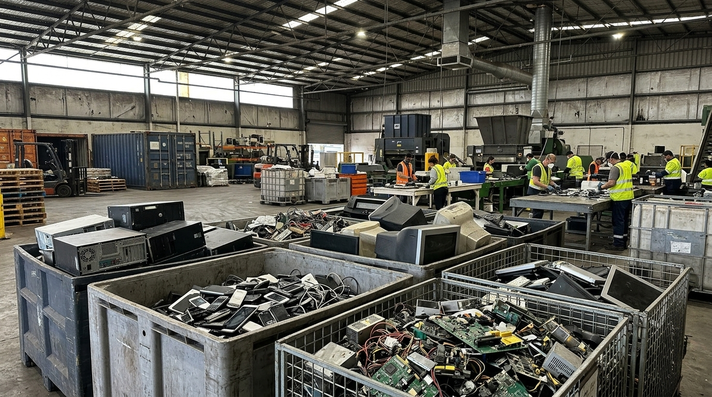
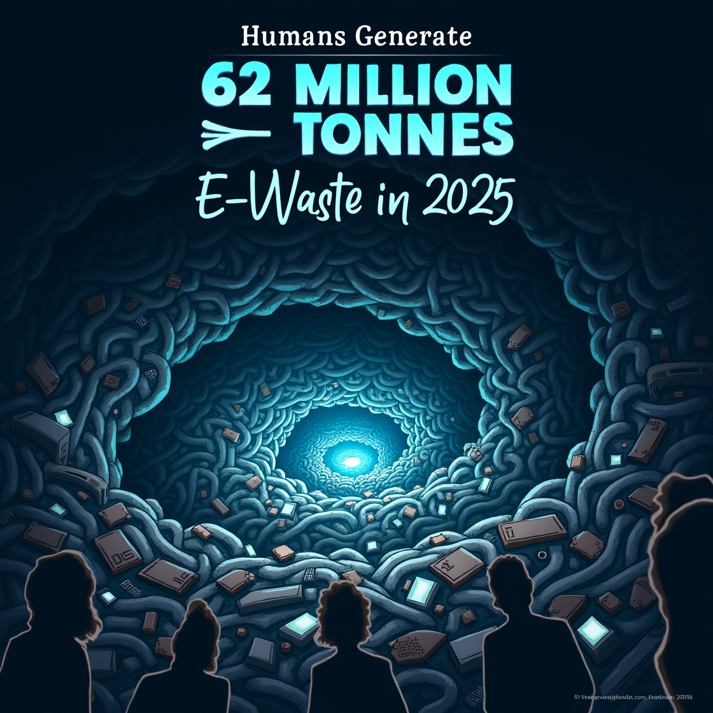

Understand the Impact of Electronic Waste

What is E-Waste?
E-waste refers to discarded electronic devices and electrical equipment such as smartphones, computers, televisions, batteries, and household appliances.For more info..
As technology continues to evolve, electronic devices are replaced more frequently. Improper disposal of these devices can release harmful substances into the environment and waste valuable materials that could otherwise be recovered and reused
Electronic waste is one of the fastest-growing waste streams in the world. Responsible disposal, repair, reuse, and recycling can help reduce environmental damage and conserve valuable natural resources.
Small changes in how we use and dispose of our electronics can make a meaningful difference. Reduce unnecessary purchases, reuse working devices, repair when possible, and recycle responsibly.

Why E-Waste Matters?
Electronic devices contain valuable materials such as copper, aluminum, gold, and other recyclable components. At the same time, some electronic waste can contain hazardous substances that require proper handling.
Reasons to Take Action:
- Reduces environmental pollution
- Conserves valuable natural resources
- Encourages reuse and repair
- Reduces the amount of waste sent to landfills
- Supports responsible consumption
Ready? Learn E-Waste Management